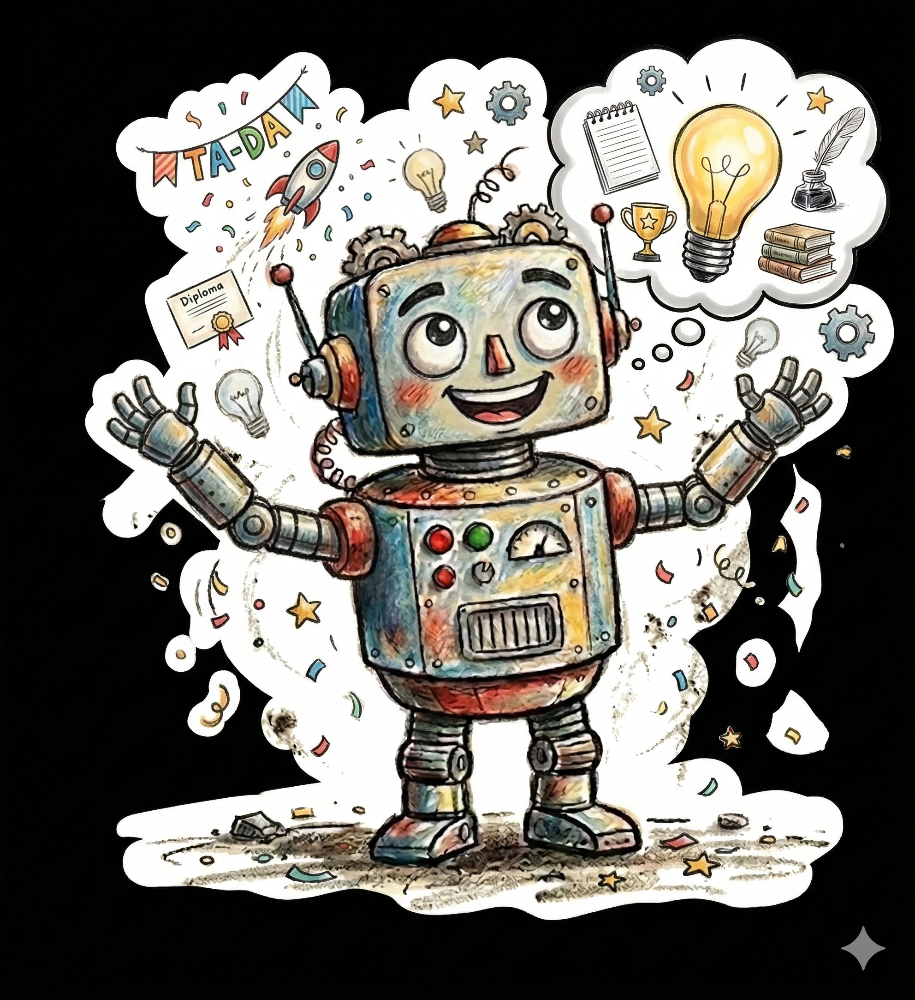
「tecnocareVoice」は、発話が困難になった方のわずかな声をAIが聞き取り、本当に伝えたかった言葉を推測して家族や友人へメールで届けるアプリです。
あなたが話してくれるほど、AIはあなたの独特な響きを理解し、より正確に想いを代弁できるよう成長していきます。
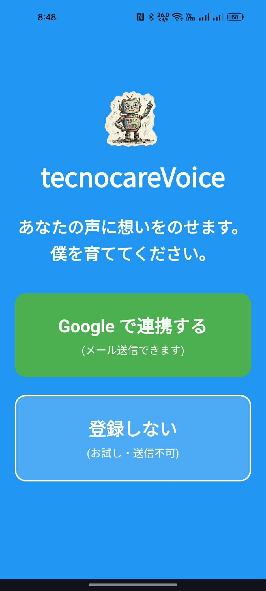
メール送信機能を使うにはログインが必要です。初回のみGoogleより警告が出ますが故障ではありません。
1. ログイン中に「確認されていません」と出たら、左下の「詳細」をタップ。
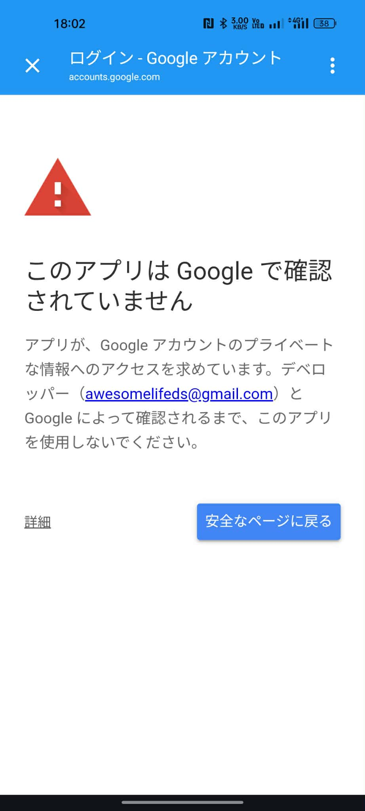
2. 一番下の「tecnocare8-dot.github.io に移動」をタップして許可してください。
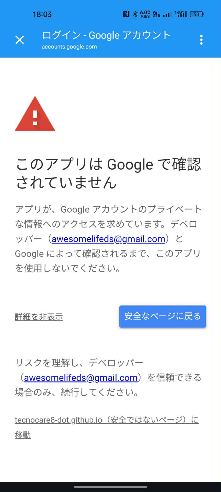
右上のロゴを5回タップして設定を開きます。
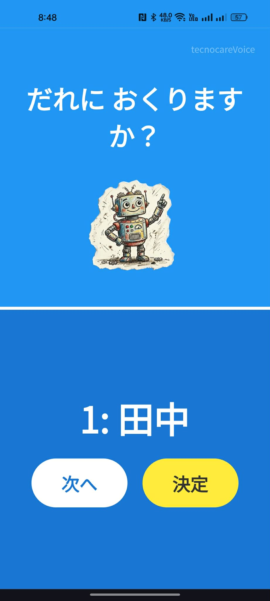
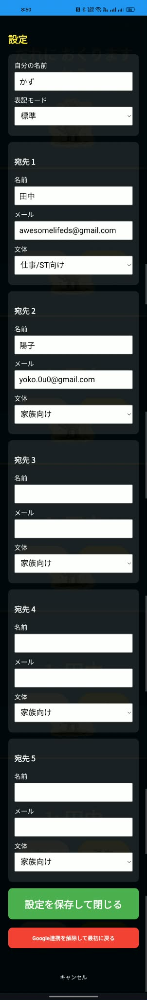
「標準」か「ひらがな分かち書き」を選べます。
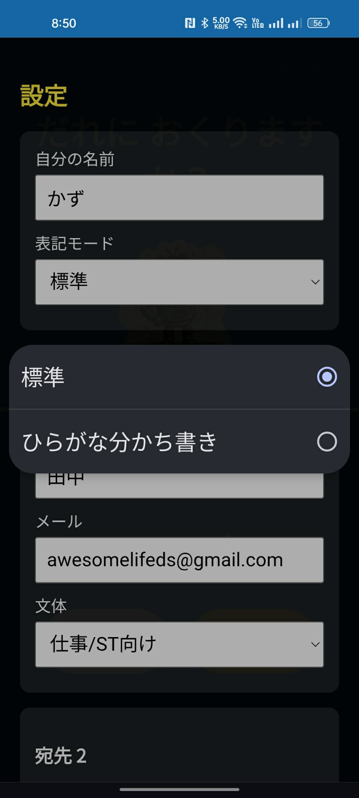
「家族向け」「友人向け」「仕事向け」など宛先ごとに文体を変えられます。
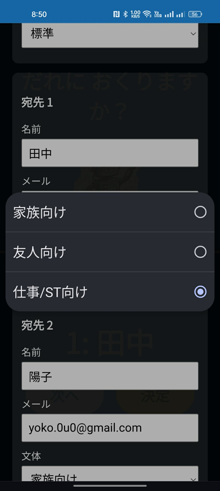
⚠️ 注意
メールアドレスが未入力だと送信ボタンが出ません。必ず登録しましょう。
1. 相手を選んで決定し、赤いボタンを押してお話しします。
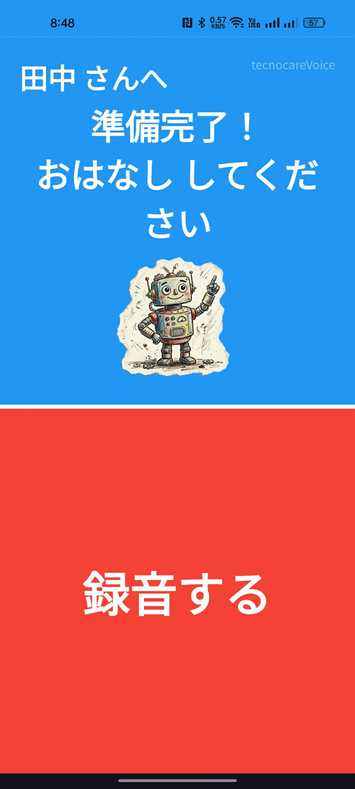
2. お話しが終わったら画面を「たたいて」ください。
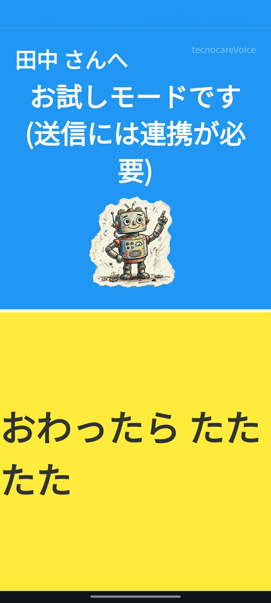
3. 解析中・・・を経て、文章を確認し送信します。あなたの声で伝えたいことをAIが考えて文章を作成します。
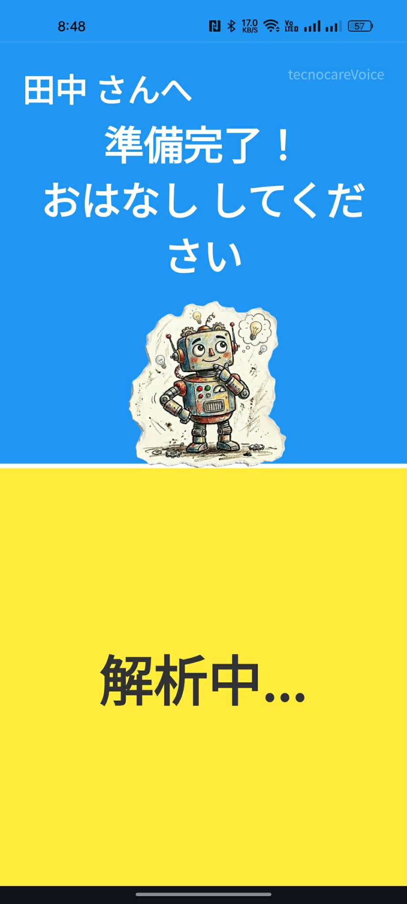
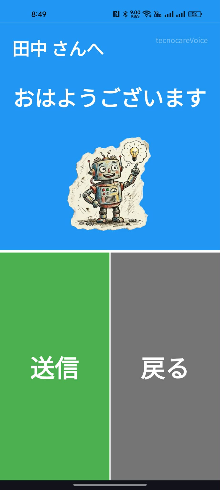
回数が増えると、特別な画像が飛び出します！
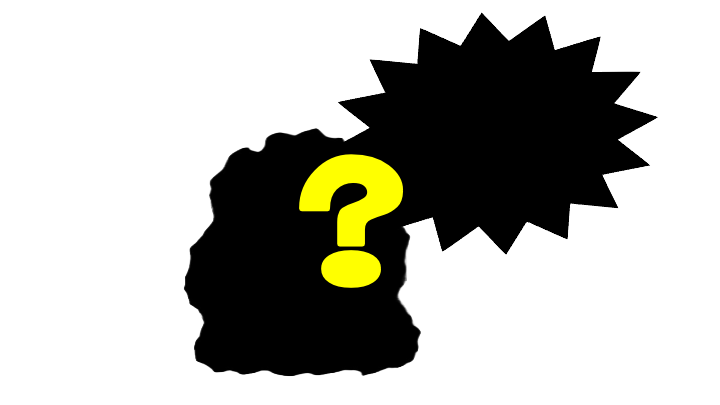
どんな画像が出るかは達成してからのお楽しみです！